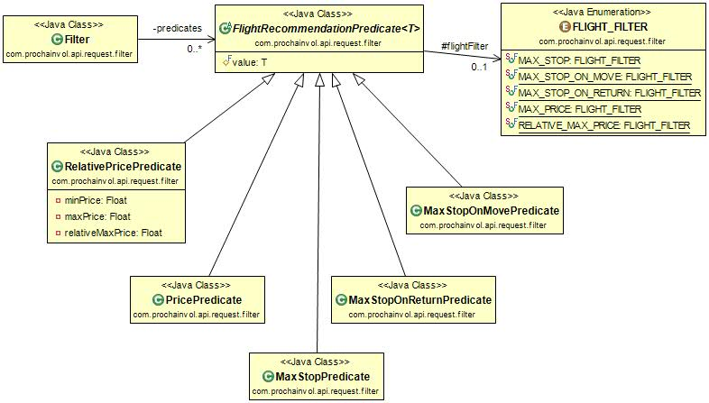
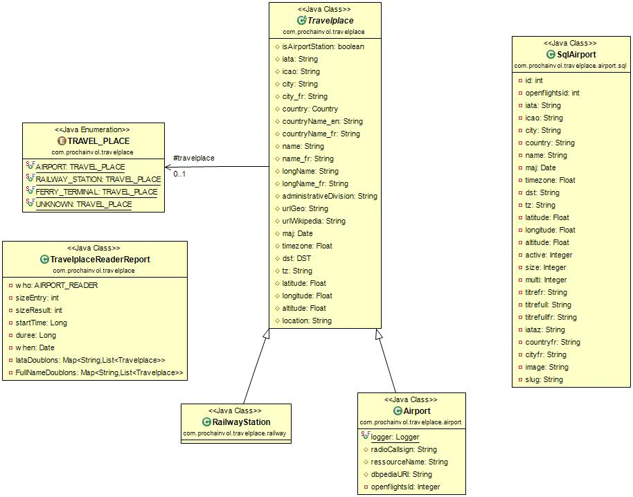

TravelPlaceRailwayStationCountryTravelType
Version 0.7 |
home |
Détails des nouveautés de la v 0.7 |
home |
Rappel sur les deux modes de fonctionnement de Travelshacker |
home |
La pluspart des requètes de l'API Travelshacker fonctionnent selon deux modes :
json, c'est le mode normal d'utilisation.
Les requètes rendent leur résultat en json.
html, encore appelé mode web-browser.
Les requètes rendent leur résultat sous forme de pages html. Il
s'agit d'un mode pour administrer l'API Travelshaker. Ce
mode permet aussi d'effectuer des tests des requètes à l'aide d'un
navigateur.
Tous les services concernés par les deux modes de fonctionnement
possèdent un paramètre
output
optionnel, à deux valeurs possibles
{html | json}
. La valeur de ce paramètre définit le type de réponse envoyée par
l'api Travelshacker. Par défaut la valeur
du paramètre
output
est
json
, de sorte qu'en l'absence de ce paramètre, l'api Travelshacker
répond en
json
.
Acces protégé par mot de passe |
home |
Depuis sa version 0.7, l'utilisation de l'API Travelshaker en
mode
html
est protégée par mot de passe. Il y a deux utilisateurs
thomas
,
pratt
.
L'accés à l'interface html d'administration et de test se fait par une page de login classique :
| URL | http://www.prochainvol.com:8080/airlines07 |
| Réponse | la page d'acceuil de l'admin Travelshaker |
| Durée de la session | sans activité : 3 mn |
Filtres en parametre des requetes |
home |
L'API Travelshaker peut filtrer les résultats des request service avant de les
transmettre. La liste des filtres est la suivantes :
| Filter Name | Role | Parameter Name |
|---|---|---|
MAX_STOP(#n:int) |
nb stops on move or on return < #n |
maxStop=n |
MAX_STOP_ON_MOVE(#n:int) |
nb stops on move < #n |
maxStopOnMove=n |
MAX_STOP_ON_RETURN(#n:int) |
nb stops on return < #n |
maxStopOnReturn=n |
MAX_PRICE(#p:float) |
price < #p |
maxPrice=p |
RELATIVE_MAX_PRICE(#p:float) |
price < minPrice + p * (maxPrice -
minPrice) |
relativeMaxPrice=p |
Plusieurs filtres peuvent être appliqués. L'ordre dans lequel ils sont appliqués est important. Certains filtres sont exclusifs les uns des autres. Les fitres peuvent être initialisés de deux manières :
MAX_STOP(0).
filtre
à la demande de service Request.
La valeur du paramètre
filtre
est un objet
Filtre
sérialisé en JSON. Cet objet filtre contient un seul attribut qui est
une liste ordonnée
predicates
de prédicats de filtrage. Chaque prédicat comporte son type ainsi
qu'une valeur, entière ou flottante selon le type. Voici un exemple :
{
"predicates": [
{
"value": 7,
"flightFilter": "MAX_STOP"
},
{
"value": 0.14,
"flightFilter": "RELATIVE_MAX_PRICE"
}
]
}

Provider budgetair |
home |
Ajout du provider budgetair. Mais pour
l'instant est bloqué au lancement de l'api Travelshaker,
car budgetair répond
non autorisé
lorsqu'on le solicite ! ... à voir ...
On peut le remettre en route en dynamique par l'interface d'admin de Travelshaker
Bug sur les iata inconnus |
home |
Les iata inconnus envoyés par les providers généraient une erreur. Deux amméliorations ont été effectuées :
RailwayStation.
Objets de type
|
home |
Introduction des objets de type
TravelPlace
avec trois sous types les
Airport
, les
RailwayStation
et les
FerryTerminal
. 
Objets de type
|
home |
Récupération sur le web des informations sur 192 gares qui possèdent un iata selon wikipedia, voir https://www.google.com/fusiontables/DataSource?docid=1DY7TLusym-ZAk5odXdklOjY49Uq_btHhUU9Aqc_9#rows:id=1 Ces 192 gares, se répartissent en trois groupes :
RailwayStation dont le
iata est le même que celui de l'aéroport suffixé par "-A".
Ainsi le iata de la gare de TGV de l'éroport Charles De
gaules est "CDG-A".
Ces 192 gares sont toutes géolocalisées, et on possède autre autres, pour chaqu'une, un lien vers sa description wikipedia et un lien vers sa description géolocalisée. Par exemple pour la gare d'aix en provence TGV les deux liens sont :
Cette gare située à 3 km de l'aéroport d'aix les Milles possède le
même iata que l'aéroport. L'Api
TravelShakcker
, pour sa part, différencie ces deux entrées par les deux iata
respectifs
QXB-A
pour la gare et
QXB
pour l'aéroport. Voici un dump de l'information dont on dispose pour
ces deux entrées :
{
"travelplace": "RAILWAY_STATION",
"isAirportStation": true,
"iata": "QXB-A",
"city": "Aix-en-Provence",
"city_fr": "Aix-en-Provence",
"country": {
...
},
"countryName_en": "France",
"countryName_fr": "France",
"name": "Aix-en-Provence TGV railway station",
"name_fr": "Gare d\u0027Aix-en-Provence TGV",
"longName": "Aix-en-Provence TGV railway station, Aix-en-Provence, France (same iata as Aix-les-milles airport)",
"longName_fr": "Gare d\u0027Aix-en-Provence TGV, Aix-en-Provence, France (même iata que l\u0027aéroport d\u0027Aix-les-milles)",
"administrativeDivision": "Provence-Alpes-Côte d\u0027Azur",
"urlGeo": "http://tools.wmflabs.org/geohack/geohack.php?pagename=Aix-en-Provence_TGV_railway_station¶ms=43_27_18_N_5_19_2_E_type:railwaystation_region:FR-U",
"urlWikipedia": "http://en.wikipedia.org/wiki/Aix-en-Provence_TGV_railway_station",
"maj": "22 Mar 2015 22:05:43 CET",
"latitude": 43.455,
"longitude": 5.317222
}
{
"travelplace": "AIRPORT",
"isAirportStation": false,
"iata": "QXB",
"icao": "LFMA",
"city": "Aix-les-milles",
"city_fr": "Aix-les-milles",
"country": {
...
},
"countryName_en": "France",
"countryName_fr": "France",
"name": "Aix Les Milles",
"name_fr": "Aix Les Milles",
"longName": "Aix-les-milles, France - Aix Les Milles QXB",
"longName_fr": "Aix-les-milles, France - Aix Les Milles QXB",
"maj": "24 Nov 2014 00:00:00 CET",
"timezone": 1.0,
"dst": "E",
"tz": "",
"latitude": 43.5056,
"longitude": 5.36778,
"altitude": 367.0
}
Récupération en continu d'informations sur les aéroports |
home |
Collecte en continu d'informations sur les aéroports fournies avec les réponses envoyées par les providers (idem que pour les iata, pas de rémanence dans la base)
Introduction des objets
|
home |
Introduction de la notion de Country au
sens de la norme ISO_3166-1.
Il s'agit des 249 pays reconnus par les nation unies. On les
représente dans l'API Travelshaker par les
objets
Country
. Ces objets sont référencés par les
travelplace
. Les pays sont chargés une fois et une seule, lors du premier login
d'un utilisateur. L'API Travelshaker
fournit maintenant un service de récupération des informations sur les
pays des gares et aéroports.
Voici la structure des objets
Country

Les deux premiers tableaux wikipedia permettent de récupérer en deux temps de l'information sur les 249 pays reconnus par l'ONU. Puis on complète avec l'informations sur les pays de l'union européenne.
Sur dbpedia, par sparql, on complête l'information pour 183 pays parmi les 249 pays récupérés dans les tabeaux de wikipedia.
Parmis ces nouvelles information on trouve un abstract sur le pays en français et en anglais, Voici l'exemple des abstracts possédés pour la France :
La France, dans sa dénomination officielle la République française, est un pays d'Europe, aujourd'hui une République constitutionnelle unitaire ayant un régime parlementaire à tendance présidentielle, dont la majeure partie du territoire et de la population est située en Europe occidentale, mais qui comprend également plusieurs régions et territoires répartis à travers le monde. Elle a pour capitale Paris, pour langue officielle le français et pour monnaie l’euro. Sa devise est « Liberté, Égalité, Fraternité », et son drapeau est constitué de trois bandes verticales respectivement bleue, blanche et rouge. Son hymne est La Marseillaise.La France est un pays formé à la fin du Haut Moyen Âge, tirant son nom du peuple franc. Du début du XVIIe siècle à la première moitié du XXe siècle, elle possède un vaste empire colonial. À partir des années 1950, elle est l’un des acteurs de la construction de l’Union européenne. Elle est une puissance nucléaire, et l’un des cinq membres permanents du Conseil de sécurité des Nations unies. La France joue un rôle important dans l’histoire mondiale par l’influence de sa culture, de sa langue et de ses valeurs démocratiques, laïques et républicaines.La France occupe en 2012, le cinquième rang mondial pour le produit intérieur brut. Son économie est de type capitaliste avec une intervention étatique assez forte. Elle figure parmi les premiers mondiaux dans les secteurs de l’agroalimentaire, de l’aéronautique, de l’automobile, des produits de luxe, du tourisme et du nucléaire.Peuplée de 66,6 millions d’habitants au 1er janvier 2014, la France est un pays développé, avec un indice de développement humain très élevé.",
France (UK: /ˈfrɑːns/; US: /ˈfræns/; French: [fʁɑ̃s] ), officially the French Republic (French: République française [ʁepyblik fʁɑ̃sɛz]), is a sovereign country in Western Europe that includes overseas regions and territories. Metropolitan France extends from the Mediterranean Sea to the English Channel and the North Sea, and from the Rhine to the Atlantic Ocean. It is one of only three countries (with Morocco and Spain) to have both Atlantic and Mediterranean coastlines. Due to its shape, it is often referred to in French as l’Hexagone (\"The Hexagon\").By area, F rance is the largest country in Western Europe and the European Union, and the third-largest in Europe as a whole. The total population of France is approaching 67 million (including all overseas departments and territories). With a European component of 63,990,000 (est. April 2014), France is the fourth most-populous European country. France is a unitary semi-presidential republic with its capital in Paris, the nation's largest city and the main cultural and commercial center. The current Constitution of France, adopted by referendum on 4 October 1958, establishes the country as secular and democratic, with its sovereignty derived from the people. The nation's ideals are expressed in the Declaration of the Rights of Man and of the Citizen, one of the world's earliest documents on human rights, which was formulated during the seminal French Revolution of the late 18th century.France has been a major power in Europe since the Late Middle Ages. It possessed the second-largest colonial empire during the 19th and early 20th centuries. Throughout its long history, France has produced many influential artists, thinkers, and scientists, and remains prominent global center of culture. It hosts the world's fourth-largest number of cultural UNESCO World Heritage Sites, drawing around 83 million foreign tourists annually – the most of any country in the world.France remains a great power with significant cultural, economic, military, and political influence in Europe and around the world. It has the world's fifth-largest military budget, third-largest stockpile of nuclear weapons, and second-largest diplomatic corps, after the United States. Due to its overseas regions and territories throughout the world, France has the second-largest exclusive economic zone in the world. France is a developed country and has the world's fifth-largest economy by nominal GDP and seventh-largest by purchasing power parity. In terms of total household wealth, France is the wealthiest nation in Europe and fourth in the world.French citizens enjoy a high standard of living, with the country performing well in international rankings of education, health care, life expectancy, civil liberties, and human development. France is a founding member of the United Nations, where it serves as one of the five permanent members of the UN Security Council. It is a member of numerous international institutions, including Francophonie, the G8, G20, NATO, OECD, WTO, and the Latin Union. France is a founding and leading member state of the European Union.
On trouve aussi des informations éventuelles supplémentaires prises
dans dbpedia par des requètes sparql. Par exemple,
on peut trouver si l'on conduit à droite ou à gauche dans le pays; la
monnaie du pays ; sa capitale eventuellement ... On trouve aussi un
classement pour certains pays répartis en 65 groupes définis par dbpedia. Vous pouvez voir par vous même, en
dynamique, ces informations en interrogeant le
sparql endpoint
de dbpedia. Voici deux exemples :
Voici par exmple un dump des informations dont on dispose pour la France :
"country": {
"dbpediaCountryUri": "http://dbpedia.org/resource/France",
"isoName": "FRANCE",
"nameEn": "France",
"nameFr": "France",
"xLongName": "République française",
"longNameEn": "French Republic",
"countryUrl": "http://fr.wikipedia.org/wiki/France",
"driveOn": "right",
"a2IsoCode": "FR",
"a3UnCode": "FRA",
"unNumericCode": "250",
"currencyCode": "EUR",
"currencyNameFr": "Euro",
"currencyUrl": "http://fr.wikipedia.org/wiki/Euro",
"currencySymbol": " €",
"abstractEn": "France ...,
"abstractFr": "La France, ...,
"capitalName": "Paris",
"capitalUrl": "http://fr.wikipedia.org/wiki/Paris",
"urlFlag": "http://commons.wikimedia.org/wiki/File:Flag_of_France.svg",
"urlFlagThumbnail": "//upload.wikimedia.org/wikipedia/commons/thumb/c/c3/Flag_of_France.svg/30px-Flag_of_France.svg.png",
"groups": [
"CountriesOfTheMediterraneanSea",
"AlpineCountries",
"French_speakingCountries",
"CountriesBorderingTheAtlanticOcean",
"EuropeanCountries",
"EuropeanUnionCountries"
]
}
L'objet
|
home |
L'objet
TravelType
décrit le type de voyage
RETURN |
Aller-retour |
ONE_WAY |
Aller simple |
LONG_WEEKEND |
Weekend vendredi/lundi |
SHORT_WEEKEND |
Weekend vendredi/dimanche |
LONG_WEEK |
Semaine lundi/dimanche |
MEDIUM_WEEK |
Semaine lundi/vendredi |
SHORT_WEEK |
Semaine lundi/jeudi |
Liste des services de la version 0.7 |
home |
La grande majorité des services de l'api Travelshacker fonctionnent sous deux modes :
html.
json.
Voir Acces protégé par mot de passe, notion de session pour des précisions sur cette notion de session.
| Service | Description | Paramètres | Résultat json | ||||||||||||||||||||||||||
|---|---|---|---|---|---|---|---|---|---|---|---|---|---|---|---|---|---|---|---|---|---|---|---|---|---|---|---|---|---|
StartTravelShacker |
Démarrage d'une session Travelshaker.
Obligatoire avant une demande de service, service " Bam"
excepté
|
Pas de paramètre | {"response":"ok"} |
||||||||||||||||||||||||||
Bam |
Test de l'API Travelshaker. | Pas de paramètre | {"response":"ok"} |
||||||||||||||||||||||||||
GetTravelTypes |
Obtenir la liste des types de voyages. Voir TravelType |
Pas de paramètre | See example | ||||||||||||||||||||||||||
Request |
Diffuser une requète aux providers. Une session doit être en cours |
|
Réponse sans erreur {"response":"ok",
"content": ...
voir ci-dessous ... } Réponse en erreur {"response":"...
err mess ... "} |
||||||||||||||||||||||||||
GetCountry |
Obtenir des informations sur un pays par un de ses noms ou de ses codes. (Au moins un paramètre requis). |
|
Réponse sans erreur See example Réponse err (pays inconnu) See example Réponse err (pas de param) See example |
Example de demande de service
Request
:
Liste des providers connus de l'API V 0.7 |
home |
Trois providers sont connus de la V 0.7 :
Version 0.6 |
home |
Liste des providers connus de l'API V 0.6 |
home |
Deux providers sont connus de la V 0.6 :
Structure de l'Api v06 |
home |